With and without the skill: a blind comparison
Each brief was run twice through the same agent: once with nothing installed, once with the beautiful-html skill. The two reports are shown as A and B in a random order. Decide which you would rather send, then press Reveal.
"Open the report" needs the full report file. Baseline reports are in this folder. Reports made with the skill are kept as their content part only; run node evals/run.mjs --arm skill to produce them again, or join a content.html to the kit.
01-customer-quarterly-review
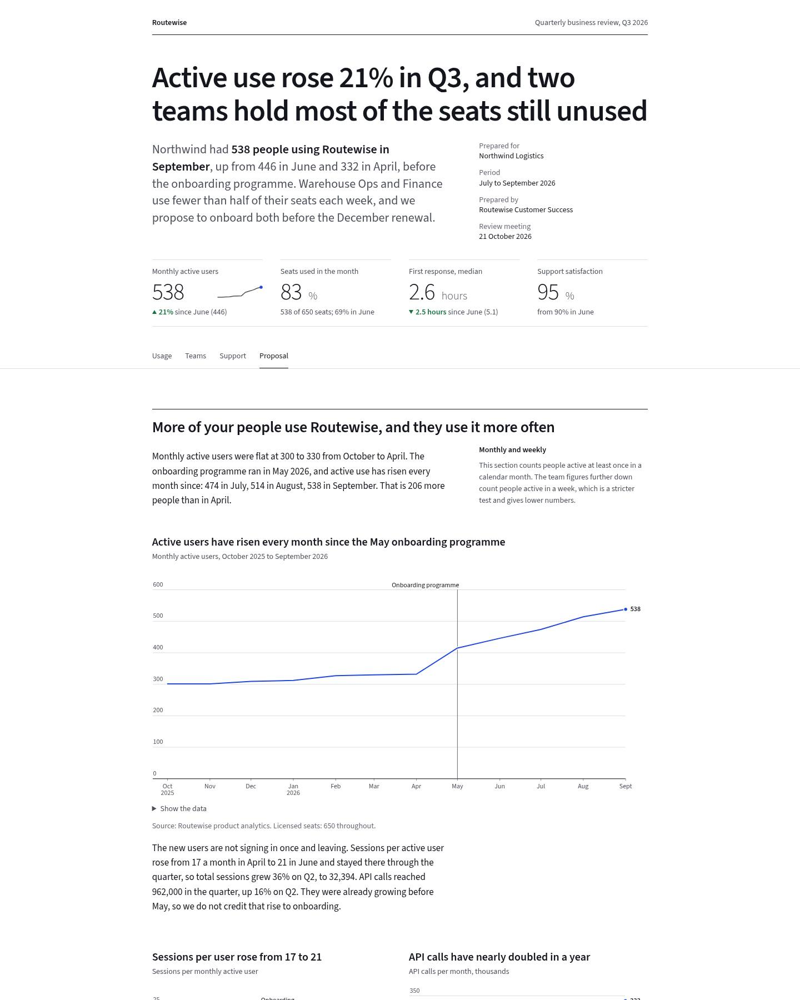
With the skill: 0 error(s), 0 warning(s) from the checker; 672 KB; 3.2 min.
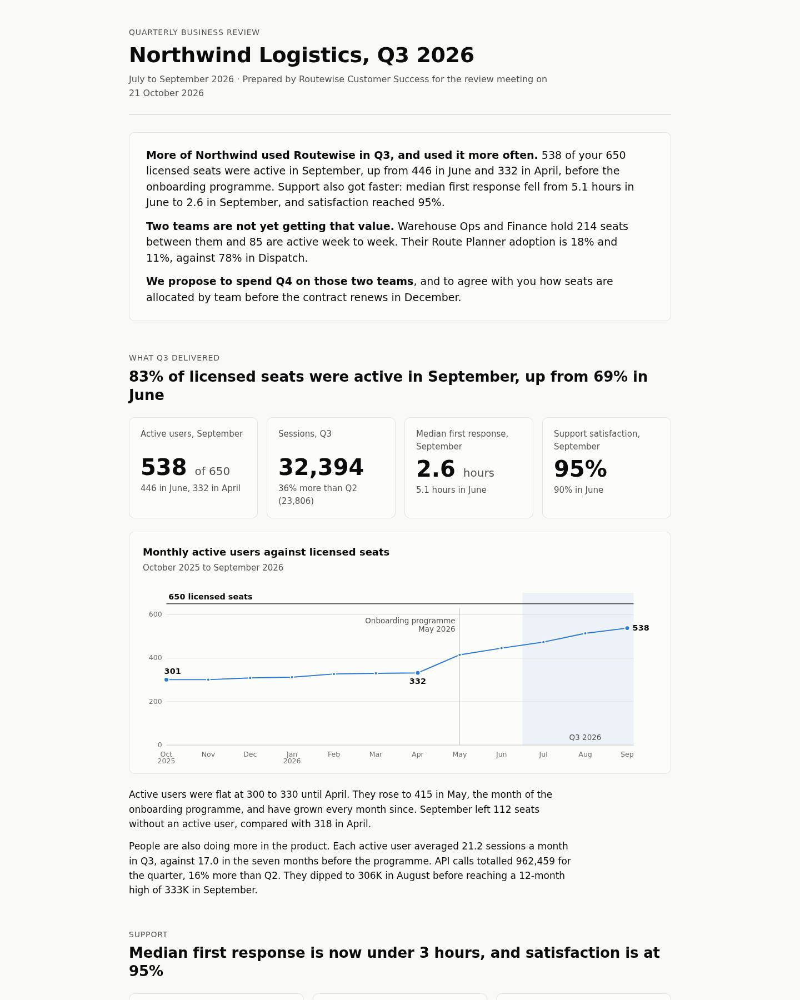
Without the skill: 1 error(s), 20 warning(s) from the checker; 34 KB; 4 min. Findings: low-contrast ×1, small-text ×15, long-lines ×1, label-overlap ×4.
02-incident-review
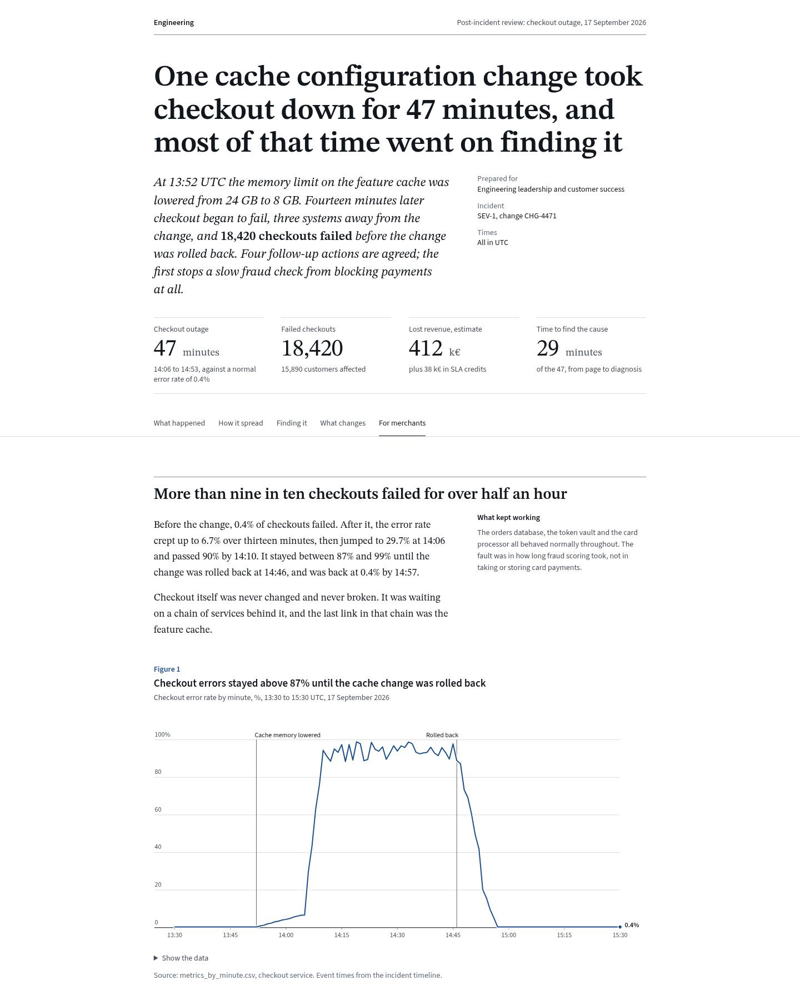
With the skill: 0 error(s), 0 warning(s) from the checker; 755 KB; 3.8 min.
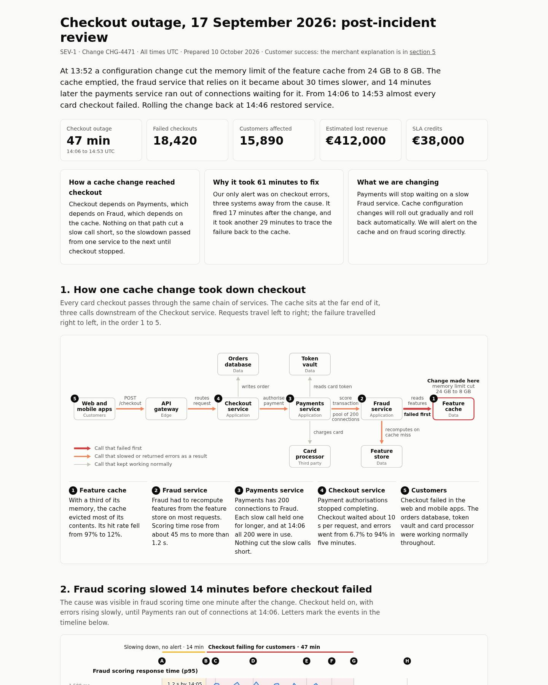
Without the skill: 0 error(s), 19 warning(s) from the checker; 66 KB; 6.8 min. Findings: small-text ×16, clipped-text ×1, long-lines ×1, heading-skip ×1.
03-survey-results
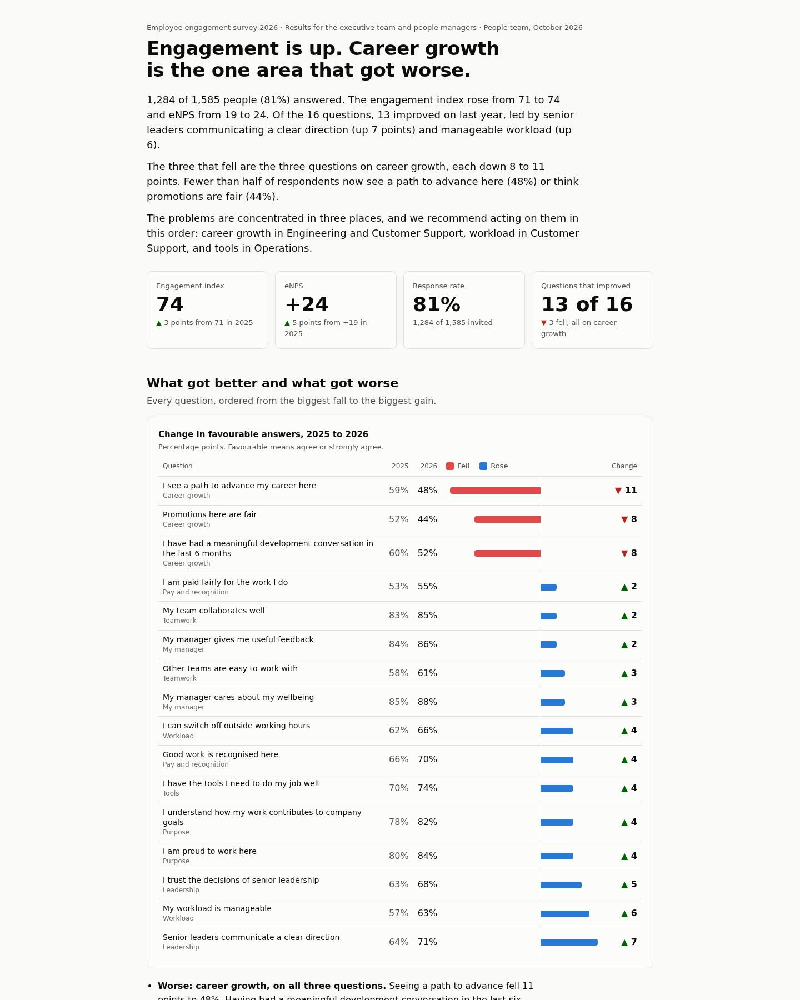
Without the skill: 0 error(s), 10 warning(s) from the checker; 37 KB; 5.1 min. Findings: small-text ×8, long-lines ×1, figure-no-title ×1.
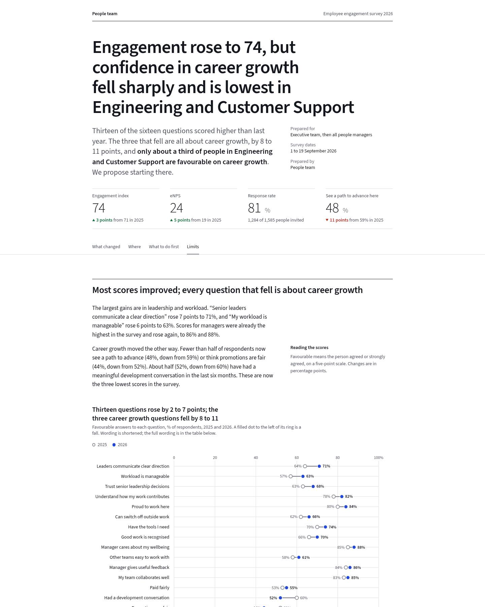
With the skill: 0 error(s), 0 warning(s) from the checker; 681 KB; 3.9 min.
04-experiment-readout
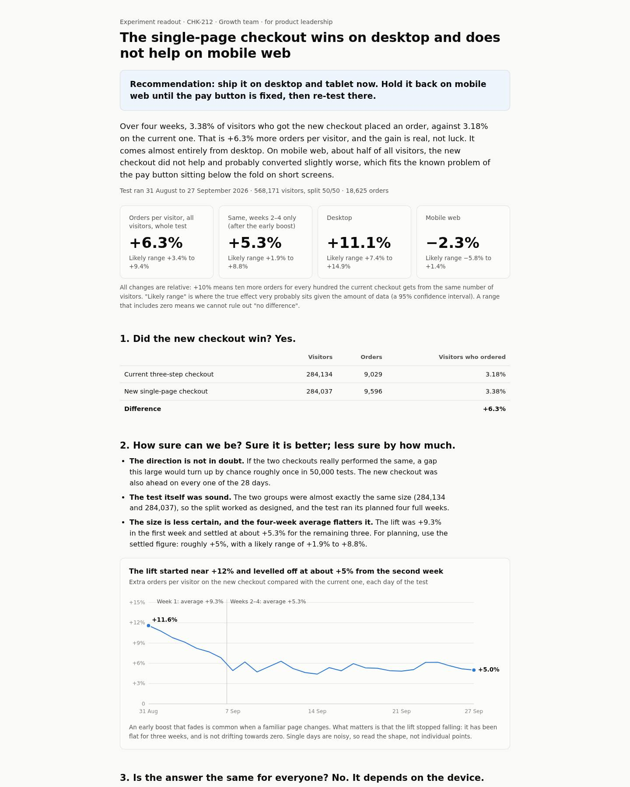
Without the skill: 13 error(s), 13 warning(s) from the checker; 25 KB; 4.8 min. Findings: low-contrast ×13, small-text ×11, long-lines ×2.
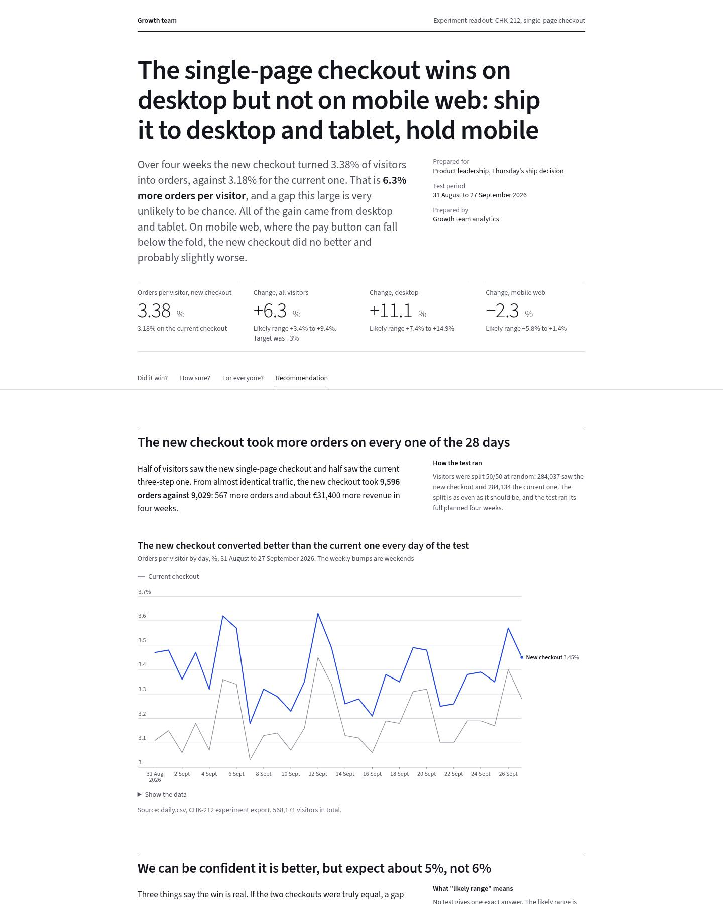
With the skill: 0 error(s), 0 warning(s) from the checker; 676 KB; 4.4 min.
05-sales-pipeline
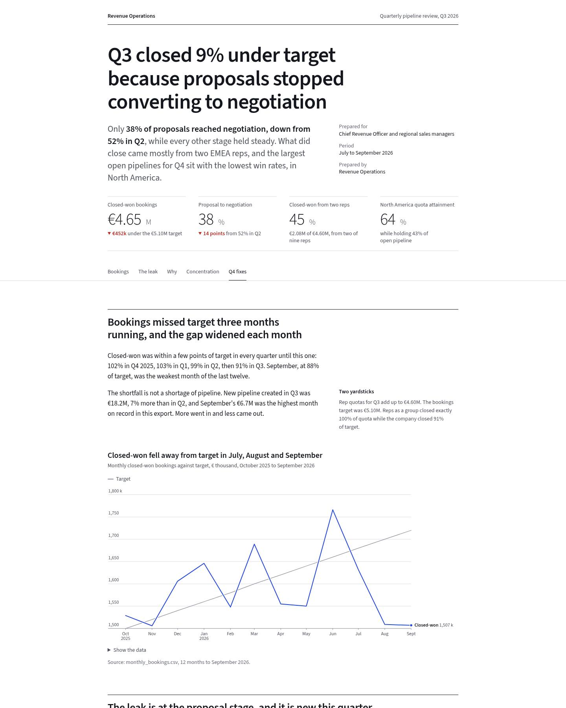
With the skill: 0 error(s), 3 warning(s) from the checker; 677 KB; 3.8 min. Findings: small-text ×3.
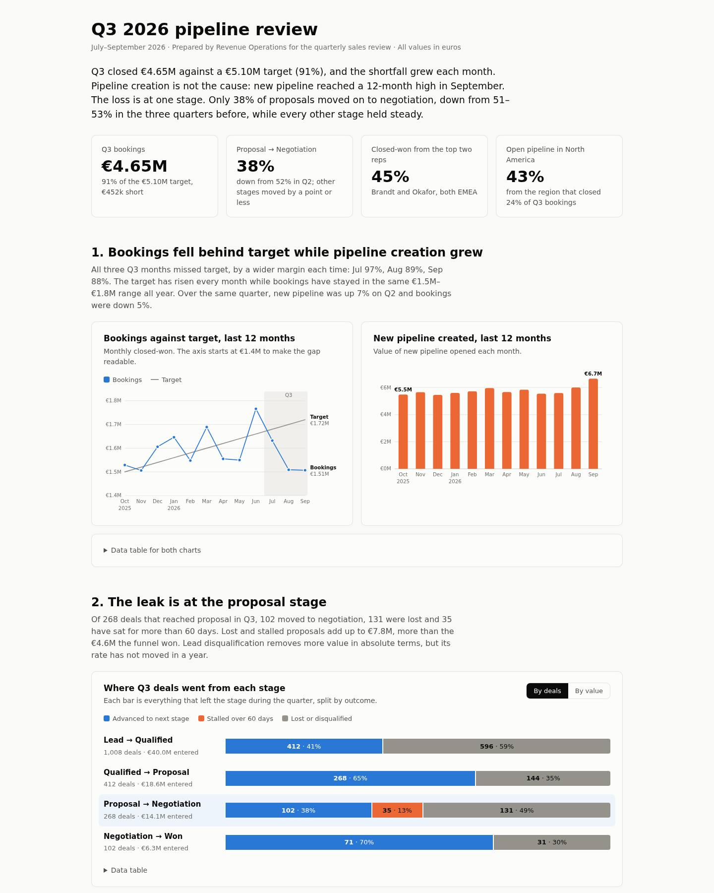
Without the skill: 6 error(s), 18 warning(s) from the checker; 49 KB; 6.5 min. Findings: low-contrast ×6, small-text ×16, long-lines ×2.
06-security-data-flows
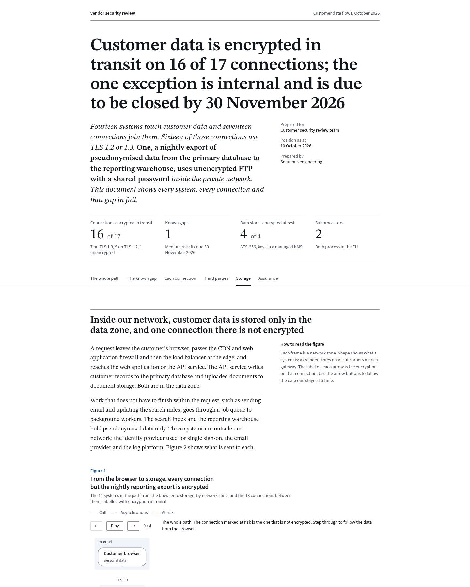
With the skill: 0 error(s), 0 warning(s) from the checker; 759 KB; 4.5 min.
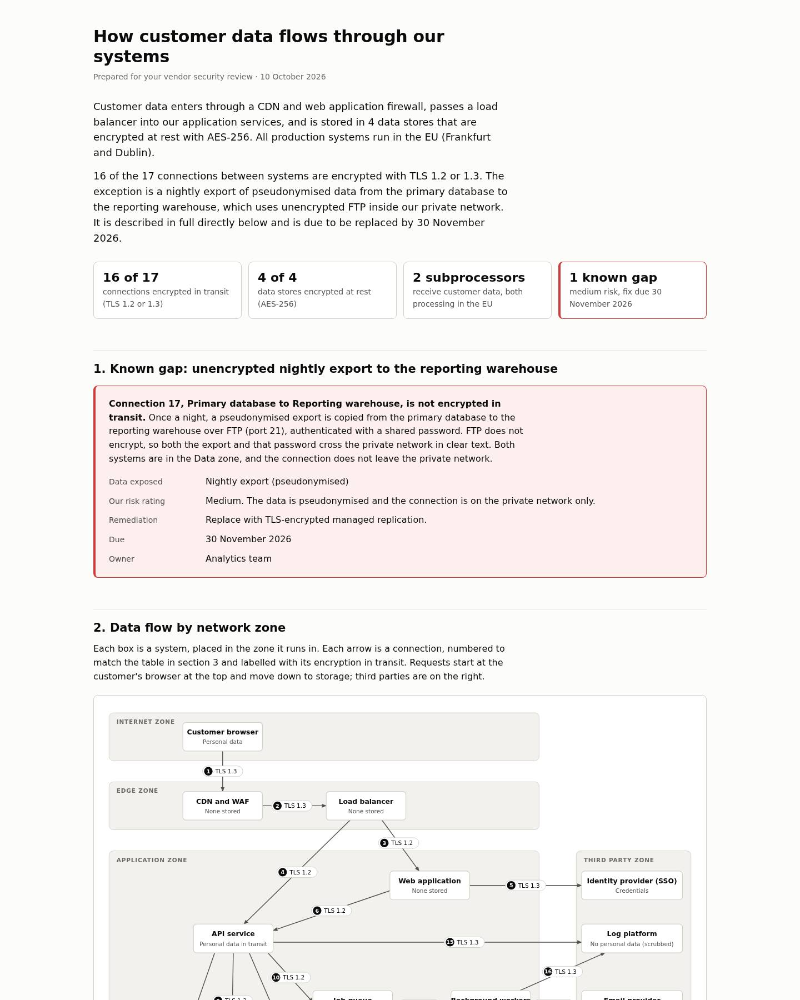
Without the skill: 1 error(s), 18 warning(s) from the checker; 39 KB; 8.2 min. Findings: small-text ×17, long-lines ×1, horizontal-overflow ×1.